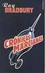

La Biblioteca del Congreso de Estados Unidos (United States Library of Congress en inglés), situada en Washington D. C. y distribuida en tres edificios (el Edificio Thomas Jefferson, el Edificio John Adams, y el Edificio James Madison), es una de las mayores bibliotecas del mundo, con más de 158 millones de documentos.2 3 La colección de la Biblioteca del Congreso incluye más de 36,8 millones de libros en 470 idiomas, más de 68 millones de manuscritos2 y la colección más grande de libros raros y valiosos, incluyendo una de las únicas cuatro copias en perfecto estado de la Biblia de Gutenberg, y el borrador de la Declaración de Independencia. Además, guarda más de un millón de publicaciones del gobierno de los Estados Unidos, un millón de números de periódicos de diferentes partes del mundo, de los últimos tres siglos, 500.000 rollos de microfilm, 6.000 títulos de cómics, la colección más grande de documentos legales, películas, cerca de 5 millones de mapas, partituras, 2,7 millones de grabaciones sonoras, y más de 13,7 millones de grabados y copias fotográficas. El documento más antiguo es una tablilla de piedra del año 2040 a. C.3 También alberga obras de arte, dibujos arquitectónicos, y valiosos instrumentos como el Stradivarius Betts y el Stradivarius Cassavetti.
La Biblioteca del Congreso fue construida por el Congreso en 1800, y permaneció en el Capitolio de los Estados Unidos durante la mayor parte del siglo XIX. Después de que la mayoría de la colección original había sido destruido durante la guerra anglo-estadounidense de 1812, Thomas Jefferson vendió 6.487 libros, su entera colección personal, a la biblioteca en 1815.4 5 Después de un período de disminución durante el siglo XIX, la Biblioteca del Congreso comenzó a crecer rápidamente tanto en tamaño e importancia después de la Guerra Civil Estadounidense, culminando en la construcción de un edificio separado y la transferencia de todas las explotaciones para depósitos de derechos de autor a la Biblioteca. Durante la expansión rápida del siglo XX, la Biblioteca del Congreso asumió una función pública por excelencia, convirtiéndose en una "biblioteca de último recurso" y ampliando su misión para el beneficio de los estudiosos y del pueblo estadounidense.
|

Crónicas Marcianas
|
Blue Label
|
Ensayo sobre la Ceguera |